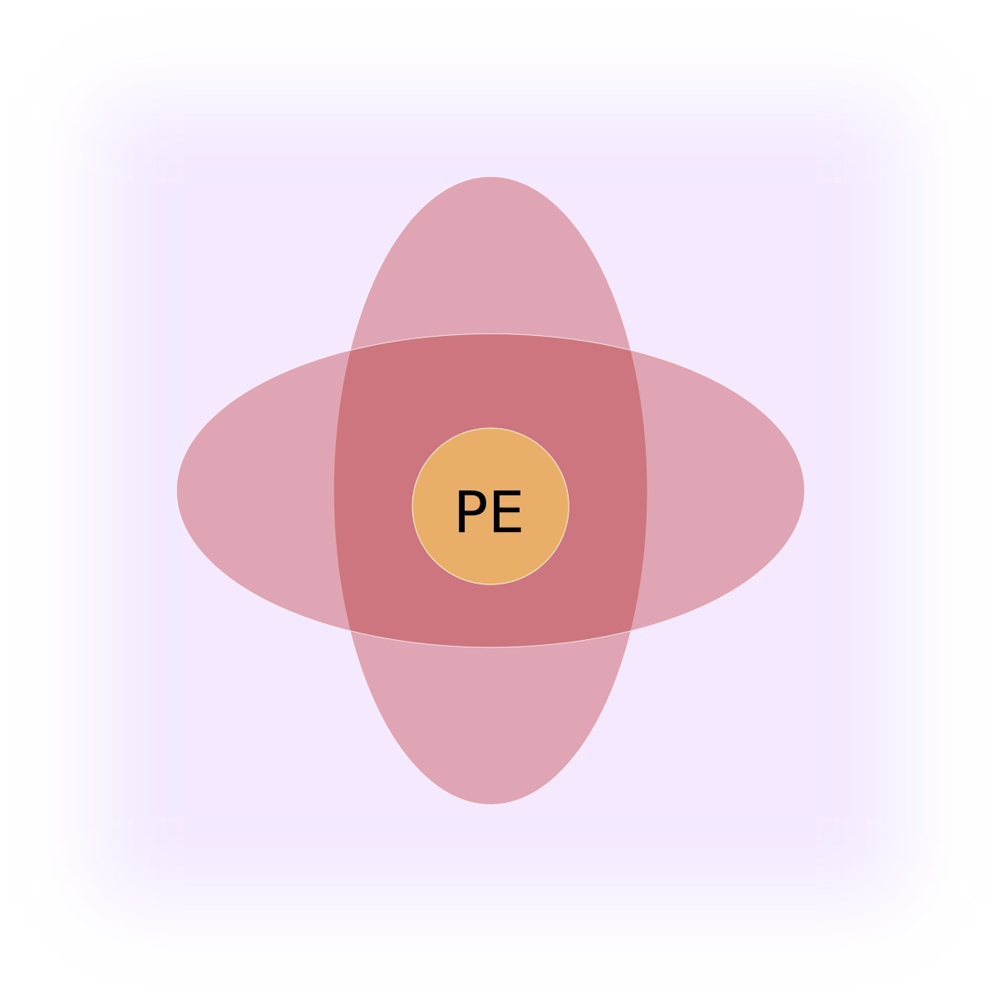

# Sylvain TOSONI
Game Programming student at [Bellecour Ecole](https://www.bellecour.fr/).
Here you can find all informations about me.
From the contacts to my projects.
# Izydor
This project is the first of my bachelor at [Bellecour Ecole](https://www.bellecour.fr/).
I also used this project to try the creation of an editor using [Rust](https://www.rust-lang.org/) and [EFrame](https://crates.io/crates/eframe).
So you can create your own game based on it.
You just have to go at [GitHub Releases](https://github.com/eVisualUser/bellecour-gamebook/releases),
to find the last version of the client and the editor.
The guide is [right here](https://sylvain-game.notion.site/Guide-c3600c02665f42b8a4689875f5d09d4b).
## Project Restrictions
- [X] Only C/C++.
- [X] Only Console for rendering.
- [X] Collaborate with 3 game designers.
- [X] Making a story that is not too long.
## How to play
You can play it online or using the native version.
### Web
On the web version you must simply click on the choices buttons.
### Native
Those keys suppose that you are using an Azerty (French) keyboard.
|Key|Action|
|---|---|
|Up Arrow|Select the choice upper the current|
|Down Arrow|Select the choice under the current|
|Escape|Exit the game|
|+|Increase the frame size|
|-|Decrease the frame size|
## Play
So we created a game where you play as Izydor during a Zombie apocalypse in Poland.
You can try it on web, or if you are on Windows you can download it.
Your malware protection and Windows will warn you about the executable.
[Download](assets/Izydor_V1.2.zip)
[Play Online](https://evisualuser.github.io/izydor/)
# Pretty Engine

Work in progress game engine for 2D games.
I am currently working on, to learn game engine development.
It will end by making a game using it, probably an open-world 2D game.
For the creation part, you must code in C++ only, but with a simplified pipeline.
The editor manage all the artist part.
To create a game you need to duplicate the code of the engine and compile it yourself if you add some script,
this is to allow you to custom the engine, and also the C++ scripting part need it,
this allows the editor to have access to your custom Components and Entities.
For the organization you can script Entities that will work standalone, and you can use polymorphism on it.
You can also create components that is more dynamic but have some performances and memory cost.
It is written in C++ and using [CMake](https://cmake.org/).
Platform support:
|Platform|State|
|---|---|
|Window|Supported|
|Linux|Work in progress|
|macOS|Work in progress|
Dependencies:
|Library|Purpose|
|---|---|
|[Bullet](https://github.com/bulletphysics/bullet3)|Physics|
|[OpenAL Soft](https://openal-soft.org/)|Audio|
|[SQLite3](https://www.sqlite.org/index.html)|DataBase|
|[Assimp](https://github.com/assimp/assimp)|3D models loading|
|[GLAD (OpenGL)](https://glad.dav1d.de/)|Rendering|
|[GLFW](https://www.glfw.org/)|Windowing|
|[ImGUI](https://github.com/ocornut/imgui)|UI|
|[TomlPlusPlus](https://github.com/marzer/tomlplusplus)|Configuration, saving|
|[STB](https://github.com/nothings/stb)|Image decoding|
Tools:
|Tool|Purpose|
|---|---|
|[Sublime Text 3](https://www.sublimetext.com/)|Programing|
|[RenderDoc](https://renderdoc.org/)|Debugging|
|[SQLite Studio](https://sqlitestudio.pl/)|DataBase|
|[Notion](https://www.notion.so/fr-fr)|Organization|
|[GitHub](https://github.com/)|Version Control|
In a near future the engine will be available on GitHub under the MIT license.
If you have any questions or request please feel free to contact me at pretty-engine-publis.starlight778@passinbox.com
Last update: 03 september 2023.